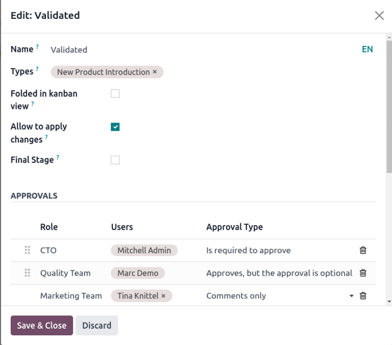

Aprobaciones¶
Notifique de forma automática a las partes interesadas o a los gerentes y asigne personas encargadas de aprobar las etapas de las órdenes de cambio de ingeniería (ECO) que se encuentran bajo revisión. Los cambios solo se pueden aplicar después de que el aprobador asignado los acepte. Una aprobación garantiza la revisión por parte de los miembros del equipo y es útil para prevenir errores o realizar acciones antes del momento adecuado.
Ver también
Agregar un aprobador¶
Para agregar un aprobador, vaya a la y haga clic en la tarjeta del proyecto de un tipo de orden de cambio de ingeniería para abrir su vista de Gantt.
En la página de Órdenes de cambio de ingeniería, coloque el cursor sobre la etapa deseada y seleccione el icono ⚙️ (engranaje). Después, haga clic en Editar para abrir una ventana emergente.
Nota
Los aprobadores se pueden agregar a cualquier etapa, pero le recomendamos que asigne algunos a la etapa de verificación, que precede a la etapa de cierre. En esta etapa se aplican las órdenes de cambio de ingeniería y se actualiza la versión de la LdM.
Para obtener más información, consulte la documentación sobre tipos de etapas.
En la ventana emergente Editar de la etapa correspondiente, haga clic en el botón Agregar una línea que se encuentra en Aprobaciones. Luego escriba la función (o título) del aprobador en el campo Función (por ejemplo, Gerente de ingeniería, Equipo de calidad, etc.) y seleccione el usuario correspondiente en el menú desplegable.
A continuación, elija alguna de las siguientes opciones como Tipo de aprobación: Se requiere para aprobar, Aprueba, pero la aprobación es opcional o Solo comentarios.
Example
Asigne al CTO, «Mitchell Admin», como aprobador necesario para las órdenes de cambio de ingeniería en la etapa Validado en el tipo de ECO que corresponde a Introducción de nuevos productos.
Las aprobaciones de los equipos de calidad y marketing no son necesarias para aplicar cambios a la orden de cambio de ingeniería, pues en el tipo de aprobación tienen configuradas las opciones Aprueba, pero la aprobación es opcional y Solo comentarios, respectivamente.
Gestionar aprobaciones¶
Los aprobadores llevar un seguimiento sencillo de sus aprobaciones pendientes, solo deben ir a la y buscar la tarjeta de un tipo de órdenes de cambio de ingeniería, allí aparece el número de tareas pendientes que tienen asignadas.
Cada botón en la tarjeta de un proyecto de una orden de cambio de ingeniería tiene una función determinada:
El botón # Cambios de ingeniería muestra el número de ECOs en progreso de este tipo de órdenes de cambio de ingeniería. Si hace clic en el botón, se abre la vista de Gantt de la página de órdenes de cambio de ingeniería.
En Mis validaciones aparece el número de órdenes de cambio de ingeniería que el aprobador debe aceptar o rechazar. Al hacer clic en este botón se muestran las ECOs pendientes de aprobación o rechazadas (estas se marcan de color rojo con el estado Bloqueado).
El botón Todas las validaciones muestra el número de órdenes de cambio de ingeniería que se encuentran en espera de aprobación o que fueron rechazadas por algún aprobador. Al hacer clic en él, aparecerán las ECOs pendientes.
Por aplicar muestra el número de órdenes de cambio de ingeniería a los que el usuario necesita aplicar cambios. Al hacer clic en el botón aparecen todas las órdenes por aprobar y aplicar cambios en la etapa de verificación.
Las órdenes de cambio de ingeniería que están marcadas con la etapa verde Hecho ya están aprobadas. El usuario solo debe hacer clic en la ECO correspondiente para ingresar a la vista de formulario y luego hacer clic en el botón Aplicar cambios.

Aprobar órdenes de cambio de ingeniería¶
Si tiene los permisos de aprobador asignado, diríjase a una orden de cambio de ingeniería en etapa de verificación para ver los botones Aprobar, Rechazar y Aplicar cambios.
Para aprobar la orden de cambio y aplicarla en la LdM de producción, haga clic en Aprobar y luego en Aplicar cambios.
Tenga en cuenta que el botón Aplicar cambios no funcionará a menos que primero haya hecho clic en el botón Aprobar. Además, el chatter registra el historial de los botones sobre los que ha hecho clic.
Advertencia
Cuando el tipo de aprobación no está establecido como Se requiere para aprobar entonces no es necesario que el usuario asociado proporcione su aprobación antes de aplicar cambios con el botón Aplicar cambios. Por lo tanto, el botón Aplicar cambios funcionará sin necesidad de hacer clic en el botón Aprobar primero.
Actividades automatizadas¶
Cuando una orden de cambio de ingeniería se mueve a una etapa de verificación, se crea una actividad planificada de forma automática para que los aprobadores asignados revisen la ECO. Los aprobadores reciben una notificación en su bandeja de entrada de actividades a la que pueden acceder desde el icono 🕘 (reloj) ubicado en la parte superior de la página.
En la lista de tareas pendientes, la notificación Orden de cambio de ingeniería (ECO) muestra el número de actividades marcadas como atrasadas, para hoy y en el futuro. Al hacer clic en cada uno de estos botones, aparece una vista de Gantt filtrada con las órdenes de cambio de ingeniería correspondientes.
Example
Las actividades programadas aparecen representadas con un número en el icono 🕘 (reloj), con 5 órdenes pendientes de aprobación para hoy. Por el momento, no hay (es decir, 0) órdenes atrasadas o para el futuro.

Al hacer clic en una ECO, se registra una actividad planificada para la aprobación de orden de cambio de ingeniería en el chatter. Haga clic en el icono i (Información) para ver información adicional, en ella se incluye la fecha de creación de la aprobación, el aprobador asignado y la fecha de vencimiento.

Actividades de seguimiento¶
Al rechazar las órdenes de cambio de ingeniería es necesario asignar tareas a los miembros del proyecto para realizar las modificaciones necesarias antes de aprobarlas. Para crear tareas con fechas límite, diríjase al formulario de la orden de cambio de ingeniería rechazada y vaya al chatter.
Seleccione el botón Marcar como hecho en la sección Actividades planeadas del chatter para cerrar la actividad y abrir una ventana emergente para crear tareas.

Desde la ventana Marcar como hecho, haga clic en Hecho y programar siguiente para abrir la nueva ventana correspondiente para programar una actividad. Luego, establezca el miembro asignado del equipo y la fecha de vencimiento para completar los cambios. Proporcione detalles sobre la tarea en el campo Resumen y en el cuadro de texto. Haga clic en el botón Programar para cerrar la ventana.
Después de cerrar la ventana, en el formulario de la orden de cambio de ingeniería, muévala a la etapa anterior. Esta acción garantizará que cuando el miembro del equipo complete los cambios y devuelva la ECO a la etapa de verificación, se cree una nueva tarea de Aprobación de orden de cambio de ingeniería para el aprobador.
Example
El aprobador crea una actividad para el responsable de la orden de cambio de ingeniería, Laurie Poiret, que detalla los cambios necesarios para que el aprobador pueda aceptar la ECO. Al hacer clic en el botón Programar, se crea una actividad planificada para Laurie que debe realizar antes del 15/08/2023.